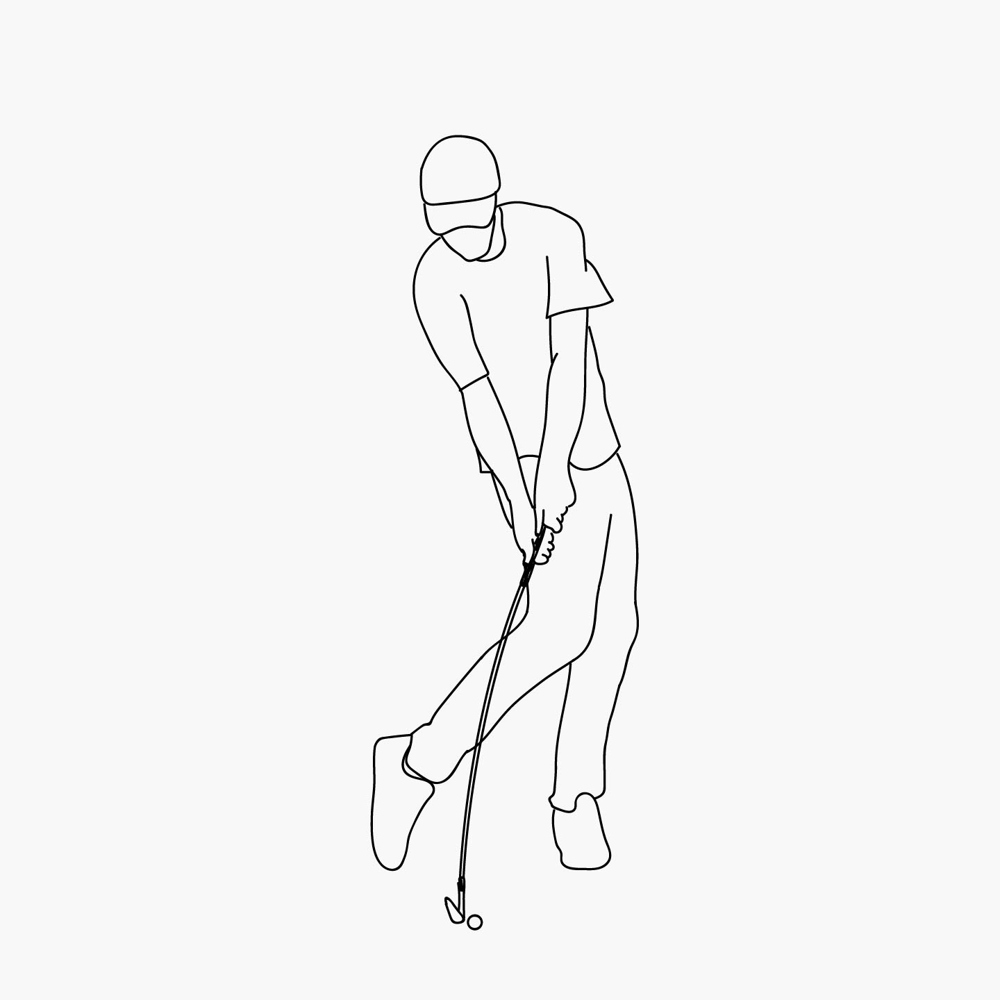

The Approach
How to make use of all those irons.
PUBLISHED SEPTEMBER 21, 2017.Now that you can hit your driver long and straight off the tee you need to get comfortable with your irons. This can be one of the hardest parts of the game for some because it requires the most consistency. Irons aren't very forgiving, a little miss won't go a long way.
The key to hitting a crisp iron is in the contact. The club needs to impact the ball first then the ground after. This is known as "hitting down" on the ball, and getting good at it will take your game to the next level.
Step by Step
- Stand with your feet shoulder width apart.
- Line up the ball in the middle of your stance.
- Pull the club back keeping your left arm straight and right arm in towards your ribs.
- When the shaft is parallel with the ground (in the backswing) the toe of the club should point to the sky.
- At the top of the club’s arc, your shoulders should be rotated 90 degrees while keeping your eye on the ball.
- At impact make sure to hit ball first, then ground. Just remember hit down.
- Follow through and strike a pose.
- Then throw your club because you just chunked it thirty yards and have to do this shit again.
